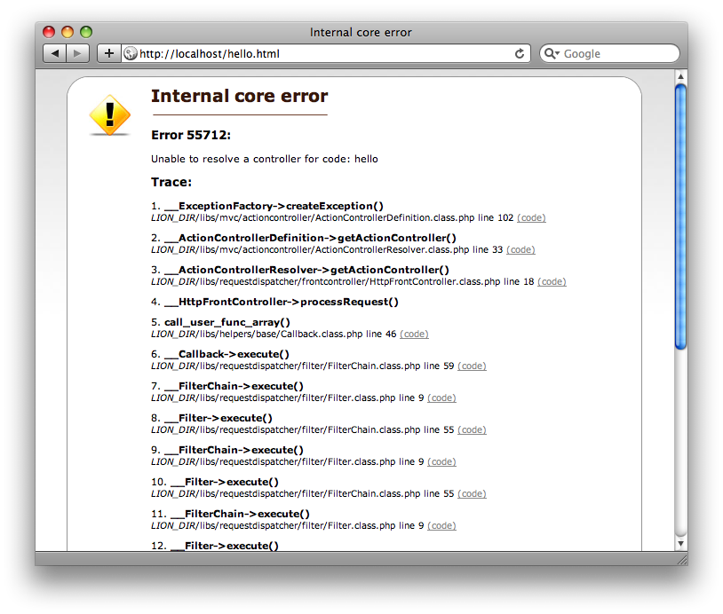
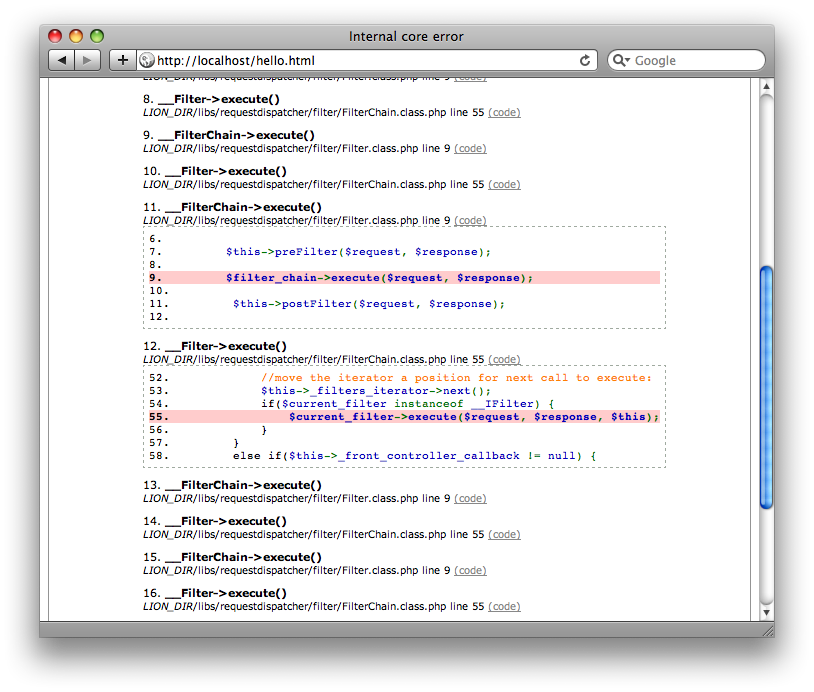
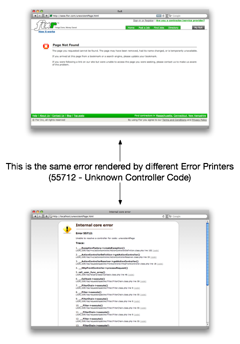

<table cellpadding="10" cellspacing="0" width="100%" border="0"><tr><td valign="top">
<div><a name=""></a><h1>The Error Page</h1>
  <div class="ref-purpose">Customizing how errors are shown</div>
 <div class="ref-synopsis"></div>
<h2>Table of Contents</h2>
<ul>

<a href="../Exception/tutorial_Exception.ErrorPage.pkg.html#error_printer">The default error page</a><br />

<a href="../Exception/tutorial_Exception.ErrorPage.pkg.html#custom_error_printer">Customizing the error page</a><br />
</ul>

 <p></p>
 <span><a name="error_printer"></a><h2>The default error page</h2><p>When an unhandled exception occurs, Lion shows the exception message as well as the trace and some other extra information in a page as following</p>
  <p></p>
  <p>This page shows the type of exceptions (i.e. <i>Internal core error</i>), the error code (i.e. 55712), the error message (i.e. <i>Unable to resolve a controller for code: hello</i>).<br />
  It also shows the complete trace, which allow to expand the excerpt of code of each call within the execution stack</p>
  <p></p></span>
 <span><a name="custom_error_printer"></a><h2>Customizing the error page</h2><p>Lion delegates in a class, the Error Printer, to render and output the error page. However, Lion allow to customize that page as well as the content that is shown to the user</p>
  <p>To do that, we have to change the ERROR_PRINTER setting to point to our own class within the app/config/application.ini</p>
  <div class="listing"><pre><ol><li><div class="src-line">...</div></li>
<li><div class="src-line">&nbsp;</div></li>
<li><div class="src-line"><span class="src-sym">;</span>----------------------------------------------------</div></li>
<li><div class="src-line"><span class="src-sym">;</span><span class="src-id">CUSTOM&nbsp;ERROR&nbsp;PRINTER&nbsp;CLASSES</span>:</div></li>
<li><div class="src-line"><span class="src-sym">;</span>----------------------------------------------------</div></li>
<li><div class="src-line"><span class="src-id">HTTP_ERROR_PRINTER_CLASS&nbsp;&nbsp;&nbsp;&nbsp;&nbsp;&nbsp;&nbsp;&nbsp;&nbsp;&nbsp;</span>=&nbsp;<span class="src-str">&quot;MyOwnErrorPrinter&quot;</span></div></li>
<li><div class="src-line"><span class="src-sym">;</span><span class="src-id">COMMAND_LINE_ERROR_PRINTER_CLASS&nbsp;</span>=&nbsp;<span class="src-str">&quot;&quot;</span></div></li>
<li><div class="src-line"><span class="src-sym">;</span><span class="src-id">XMLHTTP_ERROR_PRINTER_CLASS&nbsp;&nbsp;&nbsp;&nbsp;&nbsp;&nbsp;</span>=&nbsp;<span class="src-str">&quot;&quot;</span></div></li>
<li><div class="src-line">&nbsp;</div></li>
<li><div class="src-line">...</div></li>
</ol></pre></div>
  <p>The error printer is a class implementing the <a href="../Core/__IErrorPrinter.html">__IErrorPrinter</a> interface, which includes to create a method <a href="../Core/__IErrorPrinter.html#methoddisplayError">__IErrorPrinter::displayError()</a> that is call when an unhandled exceptions is raised to.</p>
  <p>We can use the MVC, as we're doing to render other pages, to output this page. <br />
  i.e.</p>
  <div class="listing"><pre><ol><li><div class="src-line"><span class="src-php">&lt;?php</span></div></li>
<li><div class="src-line">&nbsp;</div></li>
<li><div class="src-line"><span class="src-key">class&nbsp;</span><span class="src-id">MyOwnErrorPrinter&nbsp;</span><span class="src-key">implements&nbsp;</span><span class="src-id">__IErrorPrinter&nbsp;</span><span class="src-sym">{</span></div></li>
<li><div class="src-line">&nbsp;</div></li>
<li><div class="src-line">&nbsp;&nbsp;&nbsp;&nbsp;<span class="src-key">public&nbsp;</span><span class="src-key">function&nbsp;</span><span class="src-id">displayError</span><span class="src-sym">(</span><span class="src-id">Exception&nbsp;</span><span class="src-var">$exception</span><span class="src-sym">)&nbsp;</span><span class="src-sym">{</span></div></li>
<li><div class="src-line">&nbsp;&nbsp;&nbsp;&nbsp;&nbsp;&nbsp;&nbsp;&nbsp;<span class="src-var">$request&nbsp;</span>=&nbsp;<span class="src-var">$this</span><span class="src-sym">-&gt;</span><span class="src-id">_getRequest</span><span class="src-sym">(</span><span class="src-var">$exception</span><span class="src-sym">)</span><span class="src-sym">;</span></div></li>
<li><div class="src-line">&nbsp;&nbsp;&nbsp;&nbsp;&nbsp;&nbsp;&nbsp;&nbsp;<span class="src-var">$action_identity&nbsp;</span>=&nbsp;<span class="src-key">new&nbsp;</span><span class="src-id"><a href="../ActionController/__ActionIdentity.html">__ActionIdentity</a></span><span class="src-sym">(</span><span class="src-str">'yourOwnErrorControllerCodeHere'</span><span class="src-sym">)</span><span class="src-sym">;</span></div></li>
<li><div class="src-line">&nbsp;&nbsp;&nbsp;&nbsp;&nbsp;&nbsp;&nbsp;&nbsp;<span class="src-var">$response&nbsp;</span>=&nbsp;<span class="src-id"><a href="../FrontController/__FrontController.html">__FrontController</a></span><span class="src-sym">::</span><a href="../FrontController/__FrontController.html#methodgetInstance">getInstance</a><span class="src-sym">(</span><span class="src-sym">)</span><span class="src-sym">-&gt;</span><span class="src-id">getResponse</span><span class="src-sym">(</span><span class="src-sym">)</span><span class="src-sym">;</span></div></li>
<li><div class="src-line">&nbsp;&nbsp;&nbsp;&nbsp;&nbsp;&nbsp;&nbsp;&nbsp;<span class="src-key">if</span><span class="src-sym">(</span><span class="src-var">$response&nbsp;</span>!=&nbsp;<span class="src-id">null</span><span class="src-sym">)&nbsp;</span><span class="src-sym">{</span></div></li>
<li><div class="src-line">&nbsp;&nbsp;&nbsp;&nbsp;&nbsp;&nbsp;&nbsp;&nbsp;&nbsp;&nbsp;&nbsp;&nbsp;<span class="src-var">$response</span><span class="src-sym">-&gt;</span><span class="src-id">clear</span><span class="src-sym">(</span><span class="src-sym">)</span><span class="src-sym">;&nbsp;</span></div></li>
<li><div class="src-line">&nbsp;&nbsp;&nbsp;&nbsp;&nbsp;&nbsp;&nbsp;&nbsp;&nbsp;&nbsp;&nbsp;&nbsp;<span class="src-var">$response&nbsp;</span>=&nbsp;<span class="src-id"><a href="../ActionController/__ActionDispatcher.html">__ActionDispatcher</a></span><span class="src-sym">::</span><a href="../ActionController/__ActionDispatcher.html#methodgetInstance">getInstance</a><span class="src-sym">(</span><span class="src-sym">)</span><span class="src-sym">-&gt;</span><span class="src-id">dispatch</span><span class="src-sym">(</span><span class="src-var">$action_identity</span><span class="src-sym">,&nbsp;</span><span class="src-var">$request</span><span class="src-sym">,&nbsp;</span><span class="src-var">$response</span><span class="src-sym">)</span><span class="src-sym">;</span></div></li>
<li><div class="src-line">&nbsp;&nbsp;&nbsp;&nbsp;&nbsp;&nbsp;&nbsp;&nbsp;&nbsp;&nbsp;&nbsp;&nbsp;<span class="src-var">$response</span><span class="src-sym">-&gt;</span><span class="src-id">flushAll</span><span class="src-sym">(</span><span class="src-sym">)</span><span class="src-sym">;</span></div></li>
<li><div class="src-line">&nbsp;&nbsp;&nbsp;&nbsp;&nbsp;&nbsp;&nbsp;&nbsp;<span class="src-sym">}</span></div></li>
<li><div class="src-line">&nbsp;&nbsp;&nbsp;&nbsp;&nbsp;&nbsp;&nbsp;&nbsp;<span class="src-key">else&nbsp;</span><span class="src-sym">{</span></div></li>
<li><div class="src-line">&nbsp;&nbsp;&nbsp;&nbsp;&nbsp;&nbsp;&nbsp;&nbsp;&nbsp;&nbsp;&nbsp;&nbsp;print&nbsp;<span class="src-str">&quot;Unknown&nbsp;Error&quot;</span><span class="src-sym">;</span></div></li>
<li><div class="src-line">&nbsp;&nbsp;&nbsp;&nbsp;&nbsp;&nbsp;&nbsp;&nbsp;<span class="src-sym">}</span></div></li>
<li><div class="src-line">&nbsp;&nbsp;&nbsp;&nbsp;&nbsp;&nbsp;&nbsp;&nbsp;<span class="src-key">exit</span><span class="src-sym">;</span></div></li>
<li><div class="src-line">&nbsp;&nbsp;&nbsp;&nbsp;<span class="src-sym">}</span></div></li>
<li><div class="src-line">&nbsp;&nbsp;&nbsp;&nbsp;</div></li>
<li><div class="src-line"><span class="src-sym">}</span></div></li>
</ol></pre></div>
  <p>So we can design our own controller and view to render our exceptions and errors.<br />
  i.e. Look the difference between the same error shown by the default error printer, and by a customized error printer:</p>
  <p></p>
  <p>The first page shows how the error is shown by a customized error printer. The second screenshot shows the same error rendered by the default error printer class.</p></span></div>
      </td></tr></table>